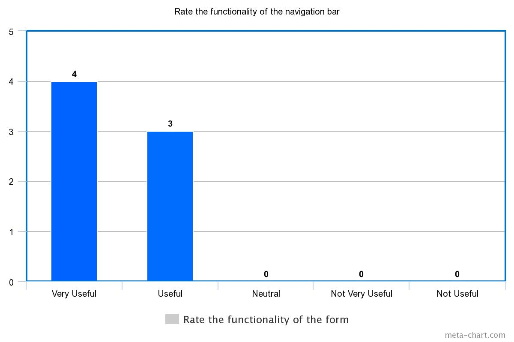
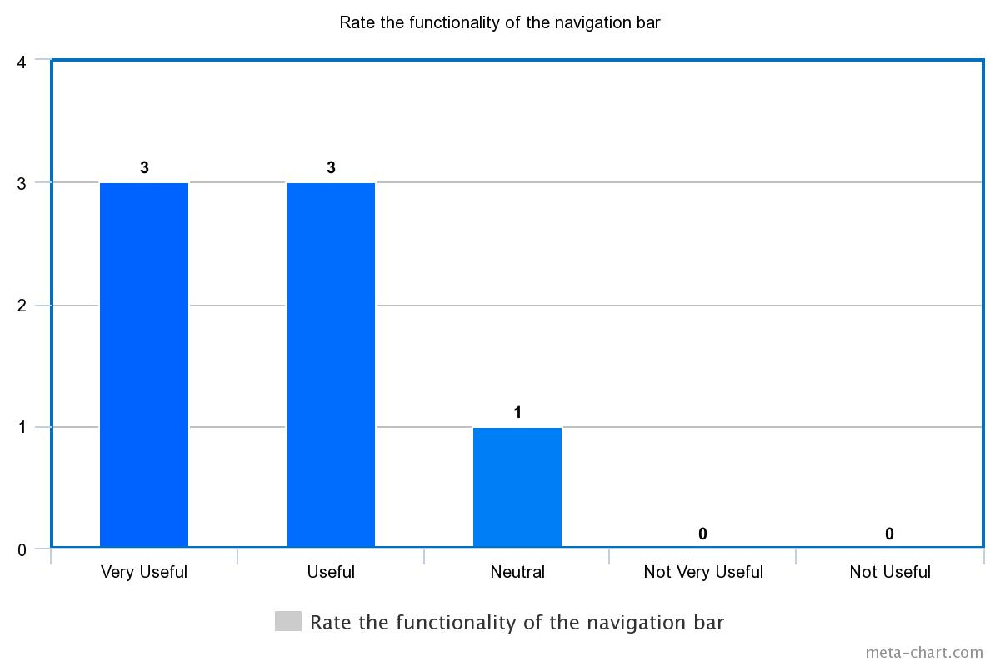
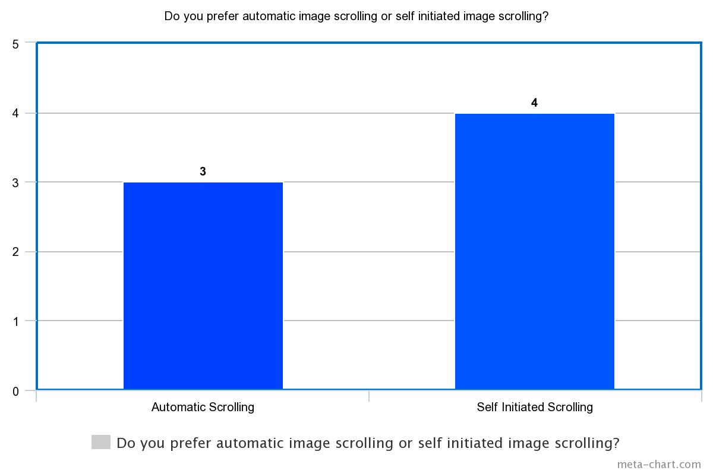

CSW 423 Final Project
CSW 423 Final Project
Stage 3: Prototype Analysis
Our team analysis page pdf |
Other team analysis page pdf
Project Team Members:
Austin Olbrych | Willie Rendek
Project Client:
First Choice Electric
The prototypes we created focused solely on the functionality of each element
with very little design implemented.
The questions asked in our survey were also focused heavily on functionality
to make sure it was easy for the user to understand.
We had three Mount Union students in our CSW 423 class complete the survey,
and had four outside sources which consisted of three Mount Union students not
in computer sciences classes and one adult who isn't very familiar with these
functionalities.
Survey questions and results:
- Functionality of the form:
- Very useful: 4
- Useful: 3

- What do you like or do not like about the form?
- It is very concise
- I like that the form is straight to the point in how it is set up
- The form is easy to read and follow and the links work well.
- I like how everything is properly laid out and how responsive it is. And if the send button is hit it opens email and make a new email rather than just sending it.
- I like the simplicity. Would be cool of the send button just automatically sent the email without opening the default email program (taking out an extra step). The 'comment" box could be a larger text area to not make people feel as if their comment has to be limited.
- Possible built in email sender/receiver so the user doesn't have to open an external program.
- I like that the form sent me right to an email. Makes it easy to use.
- Do you like the format of the form?
- Yes
- Straight to the point
- Simple and easy to follow
- Format works very well
- Yes
- Format was nice-ease of use
- Yes, includes all necessary fields
- Do you like the format of how the email is structured when the link is clicked?
- Yes
- No, it just shows what I put in all three text fields, when I could just write the comment I made in the email itself.
- The link took me right where I needed to be and the format was simple and easy to follow so yes.
- The icon for the email didn't strike me as an piece of mail right of the bat I had to think about it for a minute.
- Yes
- Yes, simple and straight to the point
- Use colons instead of equal signs
- What do you like or don’t like about the email link?
- I like the color
- In regards to the icon, try changing it to a letter, that way it is easier to figure out what it is.
- I liked how easy it was to use and that it took me directly to where I needed to be. Couldn't be easier to send an email using the link.
- The link is responsive and works how I think it would.
- I really like the nifty icon
- I like that as an option to sending a personalized email through that way where the email is pulled up in a separate program.
- I think the email link works well and is easy to understand
- Besides color, are there any changes that need to be made with the social media icons?
- No
- No
- No
- The icons appear to be good. No suggestions for changing them except for the pinterest icon should go to their pinterest page.
- When the social media buttons are clicked, it should open up the page in another tab so that the user doesn't loose their spot on the current page they're viewing.
- I think different colors for each icon would be better.
- Maybe slightly smaller or larger depending on where they are on the webpage
- Rate the functionality of the navigation bar
- Very useful: 3
- Useful: 3
- Neutral: 1

- What do you like or don't like about the slideshow?
- I like it's well timed movements.
- Slow down the speed that the slideshow moves at, especially if the pictures are going to be bigger.
- The only thing I struggled with was getting the slideshow to work on my phone. I couldn't get the link to load but perhaps it was just an issue with my phone. Other than that, it was fine.
- It works well I would suggest making the arrows a little bigger so they are easier to click on.
- Very slick. Good way to showcase company.
- The slide show is so small, doesnt take up enough real estate.
- The clickers on the side could be more unique
- Do you prefer automatic image scrolling or self initiated image scrolling?
- Automatic Scrolling: 3
- Self-initiated scrolling: 4

- What is the strongest feature in the interface? Or Anything that needs worked on?
- The strongest feature is the slide show.
- The strongest feature is the nav bar, as well as the way the form is set up for the email. For the feature that needs to be worked on, it'll be the format of the email as mentioned in #4.
- The format was simple and easy to follow and the links worked well and took me where I needed to be. Those were the strongest features. I wouldn't know what to work on, other than actually creating the navigation bar so it could be tested.
- I think the biggest thing is to make the form send an email rather than open one up with the info in it and edit the email icon a little to look more like an envelope
- Strongest is the slideshow.
- Each feature is developed nicely, email form to possible in-webpage coding is only thing.
- The email form is great!
Conclusion
Given the results, the functionality of the elements see to be good and
users are capable of completing the task. However, the comments from many
questions give subtle suggestions how how to make each element more user
friendly, or astetics that would be easier on the human eye. Most users gave
positive feedback, but those who suggested changes will be compared to others
to see if they will be better to change a certain element. These suggestions
would fall under the theme or coloring of the project which is covered by out
other team. This will make it easier to design given ideas from users of what
works better.